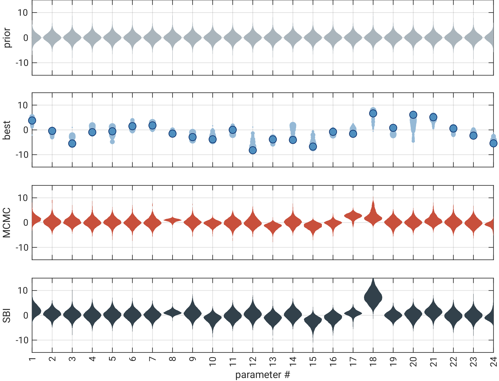

ML-basierte Ersatzmodelle
zur beschleunigten Kalibrierung und Unsicherheitsberechnung
Dr. Jonas Allgeier (BoSS Consult GmbH)
Prof. Dr.-Ing. Olaf A. Cirpka (Universität Tübingen)
Kalibrierung moderner Modelle
- moderne Modelle → viele Parameter
- Was sind die "richtigen" Werte?
- Kalibrierung
→ Modell und Messungen in Einklang bringen - automatisierte Verfahren
- schnelles Modell
- langsames Modell
- Wie trotzdem kalibrieren?
- Ersatzmodelle
Zwei Varianten
- Ziele
- Parameterwerte
- Parameterunsicherheiten
- Parameterkorrelationen
- PC-Resourcen sinnvoll nutzen
- Variante 1:
klassische Kalibrierung + Postrocessing (GPE+MCMC) - Variante 2:
direkte A Posteriori Bestimmung (SBI)
Beispiel: Ammer-Talaue
Gauß-Prozess Emulatoren als Ersatzmodelle
- GPE: Interpolationsmethode
- Eingabe
- bekannte Datenpunkte \(\boldsymbol{X}^\bullet\), \(\boldsymbol{y}^\bullet\)
- Kernel-Funktion
\(C(\boldsymbol{x}_a-\boldsymbol{x}_b,\boldsymbol{\theta}) = \theta_0 (1+\sqrt{6}d)\exp(-\sqrt{6}d)\)
\(\textstyle d = \sqrt{\sum_{i=1}^{n} \left(\frac{x_{a,i}-x_{b,i}}{\theta_i}\right)^2}\) - angepasste Koeffizienten \(\boldsymbol{\theta}\)
- Ausgabe
- Interpolationsfunktion \(y^\circ = \mu(\boldsymbol{x}^\circ)\)
- Unsicherheitsfunktion \(\sigma^2(\boldsymbol{x}^\circ)\)
- Ableitungen \(\nabla y^\circ\)


Ersatzmodelle in der Kalibrierung
- Einsatzmöglichkeiten bei klassischem Algorithmus
(z.B. nach Regis & Shoemaker, 2009) - Plausibilität im Voraus abschätzen
- Performance im Voraus abschätzen
- Richtung abschätzen
- GPE-Varianten
- GPE → Zielwertfunktion
- GPEs → einzelne Beobachtungen
- einzelner Parametersatz
- Postprocessing
- echte MCMC-Analyse mit Ersatzmodell
- vollständige A Posteriori Verteilung
- Parameterkorrelationen
- Jacobi-Matrix
- Sensitivitäten
- ausgewählte Punkte → Modell
\(\boldsymbol{\vartheta}^\bullet = \mathcal{M}(\boldsymbol{\tilde{p}})\) - Zielwerte bestimmen
\(y_{\boldsymbol{\tilde{p}}} = f_\mathrm{obj}(\boldsymbol{\vartheta}^\ast,\boldsymbol{\vartheta}^\bullet)\) - Ersatzmodell(e) trainieren
\(\vartheta^\circ = \mathcal{P}(\boldsymbol{\tilde{p}}) \approx \mathcal{M}(\boldsymbol{\tilde{p}}) = \boldsymbol{\vartheta}^\bullet\) - neue Punkte vorschlagen
\(\Delta \boldsymbol{\tilde{p}} = c \cdot \boldsymbol{e} \) - Punkte auswählen
\(\xi \cdot m^\mathrm{explore} + (1-\xi) \cdot m^\mathrm{exploit}\) - wiederholen
- Vorgehensweise "NPE-C"
(nach Greenberg et al. 2019) - A Priori Verteilung → Parametersätze
- mit echtem Modell auswerten
-
neuronales Netz:
Modelloutput → Inputparameter - Abfrage für Zielwerte
- keine zus. Modellläufe bzw. Kopplung nötig
- direkt A Posteriori Verteilung
- stochastic framework can optimize borehole placement for domain delineation
- floodplain widening can trigger lateral hyporheic exchange
- proxy-models can make calibration feasible and higher-quality proxy-models pay off


 \(\begin{bmatrix}
\frac{\partial h_1}{\partial p_1} &
\frac{\partial h_1}{\partial p_2} &
\cdots &
\frac{\partial h_1}{\partial p_m} \\[1ex]
\frac{\partial h_2}{\partial p_1} &
\frac{\partial h_2}{\partial p_2} &
\cdots &
\frac{\partial h_2}{\partial p_m} \\[1ex]
\vdots &
\vdots &
\ddots &
\vdots \\[1ex]
\frac{\partial h_n}{\partial p_1} &
\frac{\partial h_n}{\partial p_2} &
\cdots &
\frac{\partial h_n}{\partial p_m}
\end{bmatrix}\)
\(\begin{bmatrix}
\frac{\partial h_1}{\partial p_1} &
\frac{\partial h_1}{\partial p_2} &
\cdots &
\frac{\partial h_1}{\partial p_m} \\[1ex]
\frac{\partial h_2}{\partial p_1} &
\frac{\partial h_2}{\partial p_2} &
\cdots &
\frac{\partial h_2}{\partial p_m} \\[1ex]
\vdots &
\vdots &
\ddots &
\vdots \\[1ex]
\frac{\partial h_n}{\partial p_1} &
\frac{\partial h_n}{\partial p_2} &
\cdots &
\frac{\partial h_n}{\partial p_m}
\end{bmatrix}\)
Parallelisierter Ansatz


Simulation-Based Inference
Ergebnisse

 correlations hier noch
correlations hier noch
correlations hier noch
Schlussfolgerungen